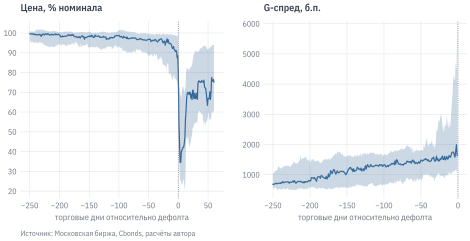
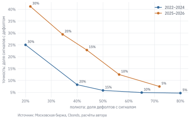

Облигация обещает выплаты, но эмитент может их не исполнить. В главе 13 доходность ОФЗ мы считали по заранее известному графику. Для корпоративной облигации график – это обещание, и рынок оценивает вероятность того, что оно будет выполнено. Разница доходностей корпоративной облигации и ОФЗ того же срока называется кредитным спредом. В него входят ожидаемые потери от дефолта, плата за ликвидность и премия за то, что дефолты происходят в плохие для инвесторов времена.
В этой главе мы измерим кредитный риск на российском рынке облигаций 2022–2026 гг. Посчитаем спред к кривой ОФЗ, оценим частоту дефолтов, сопоставим их со спредами и проверим, предупреждает ли рынок о дефолте заранее. Значительная часть главы посвящена ошибкам, которые легко совершить при подсчёте дефолтов и проверке сигналов.
УведомлениеВ этой главе
Считаем G-спред корпоративной облигации к кривой бескупонной доходности.
Отличаем строки календаря дефолтов от дефолтов эмитентов.
Оцениваем годовую частоту дефолтов в когортах эмитентов.
Сопоставляем спред с дефолтами в следующие 12 месяцев.
Изучаем цену и спред до и после дефолта.
Проверяем правило раннего предупреждения и типичные ошибки такой проверки.
Данные: папка data/credit/. Дефолты – календарь Cbonds с января 2022 г. по 02.10.2026; торги, параметры выпусков и кривая бескупонной доходности – Московская биржа. Календарь Cbonds – лицензионные данные, поэтому в книге только агрегаты: число событий и эмитентов, частоты и медианы по группам. Списков дефолтных выпусков и эмитентов в снимке нет. Отдельно приведён биржевой срез облигаций на 29.09.2026 без меток дефолта.
Предпосылки: рублёвые корпоративные облигации, торговавшиеся в режимах TQCB и TQIR (сектор повышенного инвестиционного риска). Эмитент определяется по карточке выпуска на бирже. Дефолтом считаем неисполнение платежа по купону, погашению или оферте, которое не было устранено в льготный период.
14.1 Кредитный спред
Пусть эмитент может объявить дефолт с постоянной интенсивностью \(\lambda\) в год, а при дефолте инвестор сохраняет долю \(R\) рыночной стоимости облигации. Тогда для небольших \(\lambda\) справедливое превышение доходности над безрисковой ставкой приблизительно равно ожидаемым потерям за год (Duffie и Singleton 1999 г.):
\[
s \approx \lambda (1 - R).
\]
Например, при вероятности дефолта 3% в год и возмещении 25% спред должен составлять около \(0{,}03 \cdot 0{,}75 = 2{,}25\) процентного пункта, или 225 б.п. Если наблюдаемый спред больше, разницу объясняют неликвидностью и премией за риск. Формула работает и в обратную сторону: по спреду и предположению о возмещении можно получить вероятность дефолта, которую «закладывает» рынок.
Другой подход – структурная модель Merton (1974 г.). В ней акции рассматриваются как опцион на активы компании, а дефолт наступает, когда стоимость активов опускается ниже долга. Модель объясняет, почему спред растёт с долговой нагрузкой и волатильностью активов. Но для российских эмитентов высокодоходных облигаций у неё обычно нет входных данных: акции большинства из них не торгуются.
14.1.1 G-спред
На Московской бирже стандартная мера кредитного спреда – G-спред: разность доходности облигации и ставки кривой бескупонной доходности ОФЗ (КБД) на срок, равный дюрации облигации:
\[
G = y - z(D),
\]
где \(y\) – эффективная доходность облигации, \(D\) – дюрация Маколея в годах, \(z(D)\) – ставка КБД (13.5). Это проще Z-спреда из главы 13: вместо дисконтирования каждого платежа берётся одна точка кривой. Для облигаций с фиксированным купоном разница обычно невелика.
Посчитаем G-спред для всех облигаций с фиксированным купоном, по которым на 29.09.2026 были сделки. Биржа сообщает доходность по средневзвешенной цене и дюрацию в днях, а КБД задана в узлах от 0,25 до 30 лет; между узлами используем линейную интерполяцию.
В срезе 657 выпусков. Медианный G-спред облигаций первого уровня листинга – 191 б.п., третьего – 1 180 б.п. Третий уровень – самая многочисленная группа (420 выпусков), в нём торгуется большинство небольших эмитентов. У 42% выпусков спред превышает 1000 б.п. По формуле выше такой спред соответствует ожидаемым потерям больше 10% номинала в год.
Уровень листинга – грубый признак: на нём сказываются требования биржи к раскрытию информации и объёму выпуска, а не только кредитное качество. Он полезен как первое разбиение рынка, но не заменяет анализ эмитента.
ПредупреждениеТипичная ошибка: G-спред для бумаги с плавающим купоном или офертой
Биржевая доходность флоатера рассчитывается так, будто текущий купон сохранится до погашения. Сравнивать её с кривой фиксированных ставок бессмысленно: «спред» будет меняться вместе с ключевой ставкой, а не с кредитным риском. Поэтому в срез вошли только облигации с известным фиксированным купоном.
Для облигаций с офертой биржа считает доходность и дюрацию к дате оферты. После её прохождения срок резко меняется, и G-спред на соседних датах относится к разным денежным потокам. История спреда такого выпуска требует разрыва ряда на дате оферты, иначе скачок спреда легко принять за изменение кредитного риска.
14.1.2 Спред рынка во времени
Спред зависит от кредитного качества заёмщика, поэтому его динамику надо сравнивать внутри однородных групп. Если взять среднее по всем выпускам рынка, на нём скажется не только переоценка риска, но и смена состава: приход новых слабых заёмщиков поднимет среднее, даже если требования к каждому из прежних не изменились. Московская биржа рассчитывает индексы корпоративных облигаций по рейтинговым группам национальной шкалы – AAA, AA, A и BBB – и публикует для каждого эффективную доходность и дюрацию. По ним G-спред группы считается так же, как для отдельного выпуска: из доходности индекса вычитаем ставку КБД на сроке, равном его дюрации.
Доходность индекса – средняя по входящим в него выпускам с весами по капитализации. Если цена одного выпуска обваливается, а из индекса его ещё не исключили, доходность индекса на несколько дней уходит в десятки и сотни процентов. В снимке такое случалось с индексом BBB: в отдельные дни его доходность доходила до 107%. Поэтому для каждого месяца берём медиану дневных значений, а не последнее наблюдение.
Рисунок 14.1: G-спред индексов корпоративных облигаций Московской биржи по рейтинговым группам, медиана дневных значений за месяц
Спреды выстроены по рейтингу: чем ниже группа, тем выше спред и тем сильнее он реагирует на шоки. В конце 2021 г. G-спред индекса AAA составлял 43 б.п., BBB – 330 б.п. Весной 2022 г. спреды всех групп выросли в несколько раз (у BBB – до 1 149 б.п.), к лету заметно снизились, но остались выше уровня конца 2021 г. Во втором полугодии 2024 г., пока ключевая ставка поднималась до 21%, спреды групп AA, A и BBB расширялись несколько месяцев подряд, а у AAA до декабря держались около 50–60 б.п.: при дорогом рефинансировании рынок стал требовать большей компенсации прежде всего от слабых заёмщиков. В декабре 2024 г. спред индекса A ненадолго превысил спред BBB. Индексы различаются составом и дюрацией, поэтому в острые периоды порядок групп может нарушаться. В 2025 г. средний спред группы A составлял 735 б.п. против 281 б.п. в 2023 г., BBB – 1 205 против 429 б.п. На конец ряда спред AAA – 61 б.п., A – 555 б.п., BBB – 1 158 б.п.
Индексы охватывают только выпуски с рейтингом и достаточной ликвидностью. Многие эмитенты высокодоходных облигаций в них не входят: у них нет рейтинга или он ниже BBB. Чтобы увидеть весь рынок, на конец каждого месяца возьмём для каждого эмитента медиану G-спредов его выпусков с дюрацией не меньше трёх месяцев. Эмитенты, у которых уже наступил дефолт, в расчёт не входят.
Рисунок 14.2: G-спред эмитентов рублёвых корпоративных облигаций на конец месяца: медиана и межквартильный размах
В каждом месяце в расчёт входят от 259 до 318 эмитентов. Сравним медиану по эмитентам с рейтинговыми группами. В конце 2021 г. она составляла 194 б.п. и была близка к спреду индекса A (198 б.п.). В 2025 г. медиана в среднем равнялась 827 б.п. – между группами A (735 б.п.) и BBB (1 205 б.п.). Положение медианы относительно рейтинговых групп сместилось: в 2021 г. типичный эмитент был сопоставим с группой A, в 2025 г. – слабее её. Значит, часть роста медианного спреда объясняется сменой состава рынка, в том числе выходом небольших заёмщиков без рейтинга, а не только переоценкой риска прежних эмитентов.
ПредупреждениеТипичная ошибка: смена состава вместо изменения риска
Рост медианного спреда по всему рынку складывается из двух частей: каждый заёмщик стал платить больше, и в выборке стало больше слабых заёмщиков. По одному ряду эти части не разделить. Вывод о том, что «кредитный риск вырос», надо проверять внутри однородных групп – по рейтингу, отрасли или на постоянном наборе эмитентов. Та же проблема возникает с любыми средними по меняющейся совокупности: средней доходностью фондов (выжившие фонды лучше закрывшихся), средним мультипликатором рынка, средней зарплатой в отрасли.
14.2 Сколько было дефолтов
Календарь Cbonds фиксирует каждое неисполненное обязательство: пропущенный купон, непогашенный номинал, невыкупленную оферту. У одного эмитента обычно несколько выпусков, а у каждого выпуска – несколько платежей подряд, которые он перестаёт исполнять после первого дефолта. Поэтому число строк календаря быстро растёт и само по себе мало говорит о кредитном риске.
Код
yr = data.load_credit("default_years").set_index("year")tab = pd.DataFrame({"Строк календаря": yr["rows"],"Выпусков": yr["issues"],"Эмитентов": yr["issuers"],"Впервые в календаре": yr["new_issuers"],"из них дефолт": yr["new_defaulters"],"Не исполнено, млрд руб.": yr["unpaid_mln"] /1000,})tab.index.name =Nonetab.style.format(f0).format(f1, subset=["Не исполнено, млрд руб."])
Таблица 14.1: Календарь дефолтов по годам: строки, выпуски и эмитенты. 2026 г. – по 2 октября
Строк календаря
Выпусков
Эмитентов
Впервые в календаре
из них дефолт
Не исполнено, млрд руб.
2022
302
68
34
30
28
19,2
2023
298
54
29
12
7
15,2
2024
234
55
25
12
11
42,6
2025
334
86
51
39
30
17,3
2026
606
143
67
43
27
21,9
За период в календаре 1 774 строки, но впервые допустили дефолт только 103 эмитента. В среднем за год на одного эмитента из календаря приходится 8,6 строки. 74% строк – пропущенные купоны: эмитент в дефолте продолжает «пропускать» каждый следующий платёж.
Ещё 33 эмитента попали в календарь только с техническим дефолтом. Технический дефолт – задержка платежа в пределах льготного периода. Если обязательство исполнено в этот срок, дефолта нет. В календаре 99 таких исполненных задержек.
Число новых дефолтов менялось сильно: 7 в 2023 г., 30 в 2025 г. и 27 за девять месяцев 2026 г. Причину «отсутствие денежных средств» Cbonds указывает для 83 эмитентов, а для 58 причина не раскрыта. Ещё у 19 эмитентов причина – «невозможность проведения операции»: деньги могут быть, но платёж не удаётся провести, например из-за ограничений расчётов. Один эмитент может иметь несколько причин.
ПредупреждениеТипичная ошибка: считать строки календаря дефолтов
Таблица дефолтов выглядит как готовая выборка событий: «за год произошло 600 дефолтов». Но строка календаря – это неисполненный платёж, а не дефолт компании. Один эмитент с пятью выпусками и ежемесячными купонами даёт десятки строк за год. Оценки, построенные на строках, переоценивают число дефолтов, а в регрессиях дают выборку, где наблюдения одного эмитента многократно повторяются.
Единица анализа – эмитент и дата его первого дефолта. Выпуски одного эмитента связаны перекрёстным дефолтом и общим денежным потоком, поэтому их нельзя считать независимыми событиями.
14.3 Частота дефолтов
Чтобы получить частоту дефолтов, нужен знаменатель: сколько эмитентов могли допустить дефолт. Рейтинговые агентства используют для этого когорты (Hull 2023 г.). Зафиксируем на начало года всех эмитентов, которые находились «под наблюдением», и посчитаем, какая их доля допустила дефолт до конца года.
В когорту года \(t\) входят эмитенты, облигации которых торговались на бирже в IV квартале года \(t-1\). Исключаются эмитенты, у которых дефолт уже был, и эмитенты, бумаги которых до начала года торговались в режиме TQRD для облигаций в дефолте: их дефолт мог случиться раньше, чем начинается выгрузка Cbonds. Эмитентов делим на три группы по номинальному объёму облигаций в обращении на начало года.
Код
rates = data.load_credit("default_rates")full = rates[rates["year"] <=2025] # полные годыpooled = full.groupby("size", sort=False)[["issuers", "defaults"]].sum()def wilson(k, n, z=1.96):"""95-процентный доверительный интервал Уилсона для доли k/n.""" p = k / n centre = (p + z**2/ (2* n)) / (1+ z**2/ n) half = z * np.sqrt(p * (1- p) / n + z**2/ (4* n**2)) / (1+ z**2/ n)return centre - half, centre + halfpooled["rate"] = pooled["defaults"] / pooled["issuers"]pooled["low"], pooled["high"] = wilson(pooled["defaults"], pooled["issuers"])pooled#> issuers defaults rate low high#> size #> все 1409 33 0.023421 0.016725 0.032709#> до 2 млрд руб. 604 29 0.048013 0.033635 0.068105#> 2–10 млрд руб. 290 2 0.006897 0.001893 0.024793#> более 10 млрд руб. 515 2 0.003883 0.001066 0.014048
Интервал Уилсона здесь лучше обычного \(\hat p \pm 1{,}96\sqrt{\hat p(1-\hat p)/n}\): при нескольких дефолтах на сотню эмитентов нормальное приближение даёт отрицательную нижнюю границу.
Таблица 14.2: Доля эмитентов когорты, допустивших дефолт за год, по объёму облигаций в обращении. В скобках – число эмитентов в когорте. 2026 г. – январь–сентябрь
2022
2023
2024
2025
2026
все
2,7% (332)
0,9% (322)
2,2% (359)
3,3% (396)
4,1% (417)
до 2 млрд руб.
6,5% (123)
2,4% (125)
3,8% (156)
6,0% (200)
7,5% (199)
2–10 млрд руб.
1,3% (77)
0,0% (70)
1,3% (79)
0,0% (64)
0,0% (70)
более 10 млрд руб.
0,0% (132)
0,0% (127)
0,8% (124)
0,8% (132)
1,4% (148)
За 2022–2025 гг. дефолт допускали в среднем 2,3% эмитентов в год. Но средняя скрывает главное: у эмитентов с облигациями до 2 млрд руб. частота – 4,8% (95-процентный интервал 3,4%–6,8%), у крупных – 0,4%. На небольших эмитентов пришлось 88% дефолтов. Именно они составляют сегмент высокодоходных облигаций (ВДО).
У этой оценки есть ограничения. Эмитенты, разместившие первый выпуск в течение года, в когорту не попадают, хотя тоже могут допустить дефолт. Объём в обращении рассчитан по нынешним карточкам выпусков, а не по историческим данным. Наконец, четыре года – короткий период, а 2022 и 2025 гг. были годами стресса. Долгосрочная частота дефолтов может заметно отличаться.
14.4 Спред и последующий дефолт
Если спред отражает ожидаемые потери, эмитенты с широким спредом должны чаще допускать дефолт. Проверим это. На конец каждого месяца с декабря 2021 по сентябрь 2024 г. (чтобы у каждого наблюдения был полный горизонт 12 месяцев) распределим эмитентов по корзинам G-спреда. Затем посчитаем, какая доля наблюдений закончилась дефолтом эмитента в следующие 12 месяцев.
show = pd.DataFrame({"Медиана спреда, б.п.": fixed["g_median"].map(f0),"Эмитенто-месяцев": fixed["obs"].map(f0),"Эмитентов": fixed["issuers"].map(f0),"Эмитентов с дефолтом": fixed["default_issuers"].map(f0),"Частота дефолта за 12 мес.": fixed["freq"].map(fp),"Подразумеваемая спредом": fixed["implied"].map(fp),})show.index.name ="G-спред, б.п."show.style
Таблица 14.3: Эмитенты по корзинам G-спреда на конец месяца (декабрь 2021 – сентябрь 2024 г.) и дефолт в следующие 12 месяцев. Только эмитенты, все выпуски которых имеют известный фиксированный купон. Подразумеваемая вероятность – при возмещении 25%
Медиана спреда, б.п.
Эмитенто-месяцев
Эмитентов
Эмитентов с дефолтом
Частота дефолта за 12 мес.
Подразумеваемая спредом
G-спред, б.п.
до 100
−16
587
87
0
0,0%
0,0%
100–200
155
419
105
0
0,0%
2,0%
200–400
300
906
167
1
0,3%
3,9%
400–700
534
1 192
203
8
1,7%
6,9%
700–1000
829
707
176
10
3,0%
10,5%
более 1000
1 404
1 323
191
25
9,9%
17,1%
Связь монотонна: при спреде 200–400 б.п. дефолт в течение года наступал в 0,3% наблюдений, при 400–700 б.п. – в 1,7%, при спреде больше 1000 б.п. – в 9,9%. В корзинах со спредом до 200 б.п. за весь период нет ни одного эмитента с дефолтом, а в корзине больше 1000 б.п. их 25. В полной выборке, где есть и эмитенты с неизвестным типом купона, картина та же: от 0,2% до 9,1%.
Но реализованная частота заметно ниже той, которую подразумевает спред: 1,7% против 6,9% в корзине 400–700 б.п. и 9,9% против 17,1% в верхней корзине. Даже при нулевом возмещении подразумеваемые вероятности остаются выше. На развитых рынках это известная закономерность: ожидаемые потери объясняют лишь часть спреда, особенно у надёжных эмитентов, а остальное приходится на премию за риск, ликвидность и налоги (Elton и др. 2001 г.; Huang и Huang 2012 г.). Широкий спред поэтому одновременно сигнализирует о повышенном риске и в среднем оплачивает его с запасом. Но средний запас ничего не говорит о конкретной облигации: в верхней корзине каждый десятый эмитент допустил дефолт в течение года.
ПредупреждениеТипичная ошибка: считать перекрывающиеся окна независимыми
Эмитент, у которого спред больше 1000 б.п. все 12 месяцев перед дефолтом, даёт 12 «попаданий» в таблице. Поэтому частота по эмитенто-месяцам – это корректная оценка доли времени, но не число независимых событий. Стандартные ошибки, рассчитанные так, будто все 5 134 наблюдений независимы, будут занижены: соседние месяцы одного эмитента почти повторяют друг друга. Честнее смотреть и на число эмитентов с дефолтом в каждой корзине: в средних корзинах их единицы.
14.5 Цена и спред перед дефолтом
Предупреждает ли рынок о дефолте заранее? Проведём событийный анализ (MacKinlay 1997 г.). Для каждого эмитента, допустившего дефолт с марта 2022 г., совместим его облигации по торговым дням относительно даты первого неисполненного платежа: день 0 – первый торговый день не раньше этой даты. По каждому эмитенту возьмём медиану цены по его выпускам, затем – медиану и квартили по эмитентам.
MacKinlay, A. Craig. 1997 г. «Event Studies in Economics and Finance». Journal of Economic Literature 35 (1): 13–39.
Код
ep = data.load_credit("event_paths")fig, (a1, a2) = plt.subplots(1, 2, figsize=(8, 3.2))a1.fill_between(ep["k"], ep["price_q25"], ep["price_q75"], alpha=0.25)a1.plot(ep["k"], ep["price_q50"])a1.set_title("Цена, % номинала")pre = ep[ep["k"] <0]a2.fill_between(pre["k"], pre["g_q25"], pre["g_q75"], alpha=0.25)a2.plot(pre["k"], pre["g_q50"])a2.set_title("G-спред, б.п.")for a in (a1, a2): a.axvline(0, color="grey", lw=0.8, ls=":") a.set_xlabel("торговые дни относительно дефолта")plot.source(a1, "Московская биржа, Cbonds, расчёты автора", offset=32)plt.show()

Рисунок 14.3: Чистая цена (% номинала) и G-спред облигаций эмитентов вокруг первого дефолта: медиана и межквартильный размах по эмитентам. Спред показан до дня дефолта
Торги до дефолта удалось найти для 53 из 61 эмитентов с дефолтом, чьи облигации обращались на бирже. Картина двойственная.
Цена почти до последнего держится у номинала: медиана 99,6% за год до дефолта и 95,5% за месяц до него. Обвал происходит в день события и сразу после: медиана 79,1% в день дефолта и 44,1% через две недели. Оборот в день дефолта в 4,9 раза выше обычного.
Спред, напротив, высок заранее: медиана 683 б.п. за год до дефолта и 1 503 б.п. за месяц. Цена у номинала не означает, что рынок не видит риска: у таких облигаций высокий купон, и доходность значительно выше кривой ОФЗ даже без скидки к номиналу. Поэтому для оценки кредитного риска нужно смотреть на спред, а не на цену.
Нижний квартиль цены начинает снижаться за несколько месяцев до дефолта (81,6% за месяц до события): у части эмитентов рынок замечает проблемы раньше. После дефолта число эмитентов в выборке падает с 47 до 18 через 40 торговых дней: торги дефолтными облигациями переводят в отдельный режим, который здесь не учитывается. Поэтому правая часть графика описывает только оставшиеся на основных площадках бумаги.
14.6 Правило раннего предупреждения
Можно ли использовать падение цены как сигнал продать облигацию до дефолта? Правило и протокол проверки взяты из исследования автора, где параметры были зафиксированы до первого расчёта. Здесь правило немного упрощено и пересчитано на данных главы. Его параметры не подбирались по результату.
Правило. Средневзвешенная чистая цена выпуска за 60 торговых наблюдений упала не меньше чем на 10% и отстала от медианного изменения цен выпусков той же дюрационной группы (до 1 года, 1–3 года, больше 3 лет) не меньше чем на 5 процентных пунктов. Условие должно выполняться три наблюдения подряд с перерывами не больше 7 дней. Сигнал по эмитенту – первый сигнал по любому из его выпусков. После сигнала следующие 126 дней (около полугода) новые сигналы по тому же эмитенту не учитываются.
Оценка. Сигнал считается подтверждённым, если в следующие 180 дней у эмитента наступил дефолт. Доля подтверждённых сигналов – это точность правила. Доля дефолтов, которым предшествовал сигнал в пределах 180 дней, – это полнота. В полноте учитываются только эмитенты, облигации которых торговались в эти 180 дней.
Правило находит значительную часть дефолтов: 65% в 2022–2024 гг. и 56% в 2025–2026 гг., в среднем за 64 и 117 дней до события. Но большинство сигналов ложные. В 2022–2024 гг. из 347 сигналов дефолтом закончились 17, точность – 5%. В 2025–2026 гг., когда дефолтов стало больше, точность выросла до 12%.
Низкая точность не делает правило бесполезным. Цена падает и по другим причинам: из-за распродажи крупного держателя, новостей отрасли или оферты. Сигнал – повод проверить эмитента: отчётность, график погашений, доступ к рефинансированию. Автоматически продавать по нему облигации дорого: каждая ложная тревога означает продажу подешевевшей бумаги, которая затем может восстановиться.
14.6.1 Как ошибки проверки улучшают результат
Ту же проверку легко провести неправильно, и почти каждая ошибка делает правило лучше, чем оно есть. В таблице – результаты четырёх типичных ошибок на тех же данных.
Таблица 14.4: Точность правила раннего предупреждения при правильной проверке и при типичных ошибках: доля сигналов, за которыми в течение 180 дней последовал дефолт
Проверка
Сигналов 2022–2024
Точность 2022–2024
Сигналов 2025–2026
Точность 2025–2026
эмитенты, без сигналов после дефолта, полный горизонт
Выборка только из дефолтов. Правило проверяют на компаниях, о которых известно, что у них был дефолт: «посмотрим, падала ли цена заранее». Точность получается 34% и 58% вместо 5% и 12%. Ложные тревоги по эмитентам, которые продолжили платить, просто не попадают в выборку. Это частный случай ошибки выжившего, только наоборот: выборку отбирают по исходу.
Сигналы после начала дефолта. Цена облигаций падает после неисполненного платежа, и правило «ловит» уже случившееся событие, в том числе по другим выпускам того же эмитента. Точность за 2025–2026 гг. растёт до 29%. Сигнал имеет ценность, только если он появился раньше первого дефолта эмитента.
Выпуски вместо эмитентов. У эмитента с несколькими выпусками сигналы срабатывают почти одновременно. Подсчёт по выпускам повышает точность до 19% за 2025–2026 гг. и создаёт впечатление большой выборки.
Неполный горизонт. Сигнал, после которого не прошло 180 дней, ещё нельзя признать ложным. Если засчитать такие сигналы как ложные тревоги, в 2025–2026 гг. добавится 72 ложных сигнала, и точность упадёт до 8%. Эта ошибка, в отличие от остальных, занижает качество правила.
Есть и ошибки, которых таблица не показывает. Использовать нынешние карточки выпусков, рейтинги и отраслевые справочники для отбора выборки в прошлом – значит заглядывать в будущее. Подбирать порог по тем же данным, на которых оценивается результат, – значит переоценивать правило (15.5).
14.6.2 Выбор порога
Порог падения цены 10% выбран заранее. Посмотрим, как меняются точность и полнота при других порогах. Это не поиск лучшего значения, а иллюстрация компромисса: мягкое правило замечает больше дефолтов, но даёт больше ложных тревог.
Код
th = data.load_credit("warning_thresholds")th["precision"] = th["hits"] / th["signals"]th["recall"] = th["detected"] / th["defaults_traded"]fig, ax = plt.subplots(figsize=(6, 3.4))for period, g in th.groupby("period"): ax.plot(g["recall"], g["precision"], marker="o", label=period)for x, y, d inzip(g["recall"], g["precision"], g["drop"]): ax.annotate(f"{d:.0%}", (x, y), textcoords="offset points", xytext=(4, 4), fontsize=7)ax.set_xlabel("полнота: доля дефолтов с сигналом")ax.set_ylabel("точность: доля сигналов с дефолтом")ax.xaxis.set_major_formatter(plt.matplotlib.ticker.PercentFormatter(1, decimals=0))ax.yaxis.set_major_formatter(plt.matplotlib.ticker.PercentFormatter(1, decimals=0))ax.legend(frameon=False)plot.source(ax, "Московская биржа, Cbonds, расчёты автора", offset=32)plt.show()

Рисунок 14.4: Полнота и точность правила раннего предупреждения при разных порогах падения цены за 60 торговых наблюдений
За 2025–2026 гг. при пороге 5% правило замечает 72% дефолтов при точности 7%. При пороге 30% точность растёт до 41%, но полнота падает до 22%: резкое падение цены часто происходит уже перед самым дефолтом, когда продать облигацию по разумной цене трудно. Выбор порога зависит от того, во что обходятся ложная тревога и пропущенный дефолт, – это вопрос экономики, а не статистики.
14.7 Как использовать расчёт для своей позиции
Спред и рыночные сигналы – отправная точка, а не вывод. Перед покупкой облигации с высоким спредом или при сигнале о падении цены стоит ответить на вопросы:
С чем сравнивается спред. Сопоставить его с историей того же выпуска, с другими выпусками эмитента и с эмитентами той же отрасли и сходного масштаба. Широкий спред – либо недооценка, либо компенсация за риск, который рынок видит, а вы нет.
Чем эмитент будет платить. Сопоставить график погашений и оферт с денежными средствами, операционным денежным потоком и доступными кредитными линиями. Новое размещение – не гарантированный источник денег: при закрытом рынке рефинансирования именно крупное погашение становится поводом для дефолта.
Что показывает отчётность. Долговая нагрузка, покрытие процентов и «качество прибыли»: подтверждается ли прибыль денежным потоком от текущих операций (глава 5). Для небольших эмитентов по РСБУ EBITDA часто не рассчитать: в RFSD нет амортизации, поэтому используют долг/EBIT и EBIT/проценты (5.6.1).
Сколько можно потерять. Цена облигаций после дефолта в нашей выборке – около 40–70% номинала. Позиция в одном эмитенте ВДО должна быть такой, чтобы потеря половины её стоимости была приемлемой.
Можно ли выйти. Оборот облигаций небольших эмитентов мал. Продажа позиции после сигнала может занять дни и сопровождаться дополнительной скидкой к цене (глава 17).
Рейтинг кредитоспособности – полезный, но не достаточный вход анализа. Он отражает мнение агентства на дату присвоения и меняется с запаздыванием, а отзыв рейтинга по инициативе эмитента не означает, что риск снизился.
Итоги
Кредитный спред объединяет ожидаемые потери от дефолта, плату за ликвидность и премию за риск. На российском рынке 2022–2026 гг. спред хорошо ранжирует эмитентов по риску: при спреде больше 1000 б.п. каждый десятый допускал дефолт в течение года. Но ожидаемые потери объясняют лишь часть спреда. Дефолты сосредоточены у небольших эмитентов: частота дефолтов у них в несколько раз выше средней по рынку. Цена облигации держится у номинала почти до самого дефолта, а спред расширяется заранее. Правило раннего предупреждения по падению цены замечает около половины дефолтов, но большинство его сигналов ложные. При проверке таких правил единица анализа – эмитент, выборка должна включать компании без дефолта, а сигнал должен появляться до первого неисполненного платежа.
14.8 Упражнения
14.8.1 А. Понимание
Облигация торгуется по номиналу с купоном 25% при ставке ОФЗ того же срока 15%. Какую вероятность дефолта подразумевает спред при возмещении 0, 25 и 50%? Какие ещё составляющие могут объяснять спред?
Почему число строк календаря дефолтов нельзя использовать как число дефолтов? Приведите пример, когда один дефолт даёт больше 20 строк за год.
Почему эмитенты, разместившие первый выпуск в течение года, не входят в когорту? Как их исключение может сказаться на оценке частоты дефолтов?
14.8.2 Б. Практика
По срезу cross_section постройте G-спред в зависимости от дюрации отдельно для каждого уровня листинга. Есть ли у спредов срочная структура?
Пересчитайте G-спред среза, используя вместо линейной интерполяции узлов КБД ставку ближайшего узла. Насколько меняются медианы по уровням листинга?
По таблице default_rates рассчитайте частоту дефолтов за 2022–2025 гг. для каждой группы эмитентов вместе с интервалами Уилсона. Пересекаются ли интервалы для групп «2–10 млрд руб.» и «более 10 млрд руб.»?
По таблице spread_buckets_year повторите Таблица 14.3 отдельно для каждого года наблюдения. Сохраняется ли монотонность в каждом году?
14.8.3 В. Работа с ИИ-ассистентом
Попросите ассистента написать функцию, которая по таблице дефолтов (строки: эмитент, выпуск, дата, тип события) считает годовую частоту дефолтов. Проверьте её на синтетических данных: один эмитент с тремя выпусками и шестью пропущенными купонами за год должен давать один дефолт. Найдите в предложенном коде места, где единицей счёта служит строка или выпуск.
14.8.4 Г. Мини-исследование
Оцените экономику правила раннего предупреждения. Пусть при подтверждённом сигнале продажа позволяет избежать потери \(L\) процентных пунктов номинала, а при ложном сигнале инвестор теряет \(c\) процентных пунктов (скидка при продаже и упущенное восстановление цены). Покажите, что правило окупается при точности выше \(c/(c+L)\). Оцените \(L\) по Рисунок 14.3 и сравните пороговую точность с результатами главы при \(c\) = 2, 5 и 10 п.п.
Вопросы для самопроверки
Чем G-спред отличается от Z-спреда?
Почему G-спред флоатера не измеряет кредитный риск?
Что такое технический дефолт и почему его не считают дефолтом?
Чем точность правила раннего предупреждения отличается от полноты?
Почему проверка правила только на компаниях с дефолтом завышает его точность?
СоветОтветы
G-спред сравнивает доходность облигации с одной точкой КБД на срок дюрации. Z-спред – постоянная добавка ко всей кривой, при которой дисконтированные платежи равны цене.
Биржевая доходность флоатера рассчитана при неизменном текущем купоне, поэтому её разность с кривой фиксированных ставок меняется вместе со ставкой, а не с риском эмитента.
Это задержка платежа в пределах льготного периода. Если обязательство исполнено в этот срок, инвесторы получают деньги, и дефолта нет.
Точность – доля сигналов, за которыми последовал дефолт. Полнота – доля дефолтов, которым предшествовал сигнал.
В такой выборке нет ложных тревог по компаниям, которые продолжили платить: их исключили, зная исход.
Что почитать
Hull (2023 г.) – главы о кредитном риске, рейтингах и оценке вероятности дефолта по спредам.
Merton (1974 г.) – структурная модель: долг как опцион на активы компании.
Duffie и Singleton (1999 г.) – модели интенсивности дефолта и связь спреда с ожидаемыми потерями.
Elton и др. (2001 г.) и Huang и Huang (2012 г.) – какая часть кредитного спреда объясняется ожидаемыми потерями.
Altman (1968 г.) – модель прогнозирования банкротства по финансовым коэффициентам.
Hull, John C. 2023 г. Risk Management and Financial Institutions. 6-я изд. Wiley.
Merton, Robert C. 1974 г. «On the Pricing of Corporate Debt: The Risk Structure of Interest Rates». Journal of Finance 29 (2): 449–70.
Duffie, Darrell, и Kenneth J. Singleton. 1999 г. «Modeling Term Structures of Defaultable Bonds». Review of Financial Studies 12 (4): 687–720.
Elton, Edwin J., Martin J. Gruber, Deepak Agrawal, и Christopher Mann. 2001 г. «Explaining the Rate Spread on Corporate Bonds». Journal of Finance 56 (1): 247–77.
Huang, Jing-Zhi, и Ming Huang. 2012 г. «How Much of the Corporate-Treasury Yield Spread Is Due to Credit Risk?»Review of Asset Pricing Studies 2 (2): 153–202.
Altman, Edward I. 1968 г. «Financial Ratios, Discriminant Analysis and the Prediction of Corporate Bankruptcy». Journal of Finance 23 (4): 589–609.